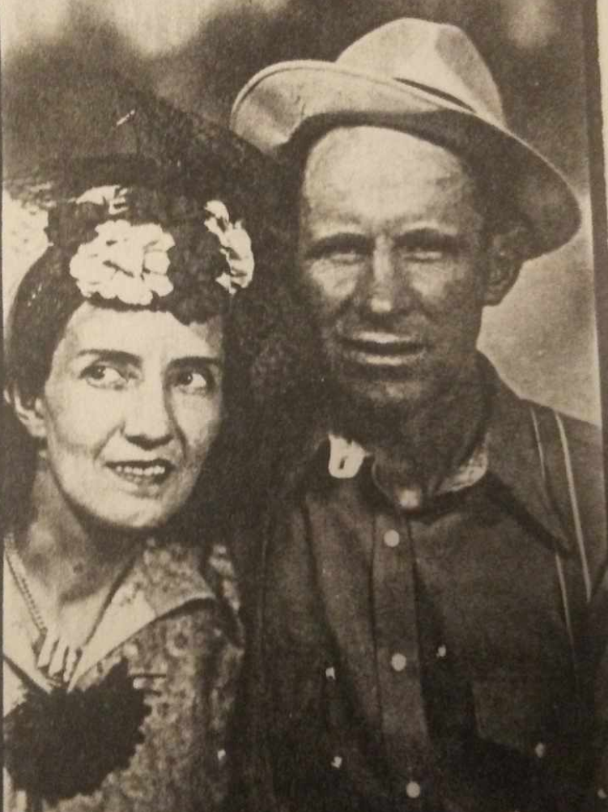

1902 – 1975
| Birth: | 13 Oct 1830 | Sanford, Colorado |
|---|---|---|
| Marriage: | 15 Jun 1924 | Manassa, Colorado |
| Death: | 18 Feb 1975 | |
| HOME | ||
If my memory serves me well, this was recorded on a reel to reel tape deck of my sister Jewell Gay's on a quiet Saturday afternoon, in October of 1965.
I was born in a log house in Sanford Colorado. It had 2 rooms and there were eight of us living in those 2 rooms. My mother’s brother got up and moved to Idaho and told my Mother that she could have the brick house, if she took care of Grandmother for the rest of her life. This house is where I was raised. We moved in when I was about 1 year old. From there life has been pretty sweet. [The corner of 1st W. and 3rd N.].
I went to school when I was 6 years old only for about 2 months, then I got sick. When I got well, the rest of the family got diphtheria, and in February my sister got it and died. I remember that very distinctly, all the sick had to stay in the house and, with neighbors. I remember Dad holding that little girl up to the window for Lou, Melvin, and me and all the neighbors who wanted to see her. We could come by for the house was quarantined. Those days they would put up a red flag so no one would come or go. They did not have a funeral for her. She was the sweetest girl there ever was. She was kind of light headed and my other sister Edna had dark hair.
The Christmas before an old lady that lived across the street from us gave each of the girls a doll, a black headed one for Edna and blond for Geneva. Well something happened one day, one of those girls dropped her doll on a big rock that was on the south side of the house by the door step and broke it. This was one of those dolls with a chalky head. They did cry and that old lady came over with a bucket of eggs and took them to the store and got a new doll.
That hurt me so, if it had been my toy I would have been all right but it was hers and we thought the world of that little white headed girl. In fact there were 5 boys and 2 girls in the family and they were all pretty special people.
The diphtheria almost got Mom and Dad too. When Lawrence came out of it, he was about 16 and was skin and bones. They gave an anti-toxin for a vaccination and it was too strong and it about killed ya to take it. They don’t give that anymore. The anti-toxin came in a wooden box. Later we used them for pencil boxes. It made dandy pencil boxes. Mother kept one of them for years. The dolls I don’t know what happened to them, only they hung up in the front room for years until after Mom had died.
My folks were very poor and it was hard for them to make a living for us. We used to trap muskrat, they were worth one dollar apiece. One year Lew ran a line and I ran another the other way we made out all right. I got a job on the hay stacking and I got $25 so I bought a new set of clothes with $10 and was going to keep the rest for Christmas. Well Harry Morgan had a bull across the fence and we went across for some wood and it turned and I went to cross and I caught my britches on the fence and broke my leg. That took the rest of my money and also I was laid up all winter. That hurt my feelings and was one of my bad events.
When I was 17 Elmer Holman and me took a notion to go to Denver, we were buddies. I had bought a calf for little of nothing. Well I was already having livestock around so I could have something to trade in any time I needed some money. So I raked up a little money and we went to Denver. Well (laugh) we got up there and we ate up everything we had and we had to get a job so we went over to the railroad and we lied about our ages. They sent us to Alamosa to build a bridge. When we got to Alamosa, we just went home and that ended the summer. Next we started school. Well I’d been in the 4th grade 4 years so they finally graduated me out of the 4th grade. I never did learn anything in school just the school of hard knocks. When I got 18 years old I got in trouble with the teacher so I didn’t go back to school anymore.
Spencer was foreman up on Wolf Creek Pass. He asked Elmer Holman and me if we wanted to work. We could come up the first of April. So we went over to Ed Murphy and we told him what we were going to do he sold us everything we needed on credit and we had about $5 left and we gave that to Elmer’s dad to take us up there. We worked on twin bridges up there. Oh we had a good time. We would work all day and fight all night. Oh it’s so pretty. There was snow up there and grass coming up in the snow. There was me Jess Miller, old man Sanders, Eldon and Billy Spencer. We cleaned the snow off Wolf Creek Pass and stayed April and May. I think it was about 10th of June when they decided to cut the crew. So we came home and paid off our bills and we had a couple of hundred dollars left.
I decided to go to Utah. I had too much money then. I couldn’t stay around Sanford. We went to Saltair and purt near blowed all our money so we laid in the saltwater. At first you want to get out but after a while it shore was good. Then we went down to Alberta to work in the fruit. The longer we stayed the poorer we got. The fruit was all consigned out. The farmers didn’t get much for their fruit. They had milk cows so we stayed there all winter. Then Jensen wanted me to go out to sheep camp so I did. Then his stepson told a big lie on me so they canned me. Then I went to Provo and got me new clothes. Oh they were pretty a new suit, shoes everything for $20. On that Wolf Creek job me and Elmer bought a trunk together when we settled up I Got the trunk.
We stayed around Eureka and worked in the mines so we got a little money went to Salt Lake and bummed around a little. We didn’t know what we were going to do with our clothes so we put them in a suitcase and sent it home. Got to Salt Lake City and met old Bill Brothers, he wanted to know what we were doing here. Well I said we were going to Montana. Don’t tell my Ma you saw me here in overalls. When he got home he ran over to tell Ma how he found me.
We went to Montana and sat around there a few days. We never even looked for work. There was a guy that ran a restaurant he felt sorry for us. He fed us and wouldn’t take money for it. We next went up to Laurel and a guy came by and asked,”Would you guys like to pitch hay.” We said “Fine.” We stayed for about a month. Elmer was at one place and me another. One day he came by and I said “What are you going to do?” and he said “I’m going to quit.” “Well I’m going to quite too.” We went and told the man and he said “Today is Saturday and I can’t get you any money today.” Well I had about $20 in my shoe. I wore that shoe all summer with that money in it and it was stuck.
This was just about the time of that Teapot dome. It was an oil deal that was going on, and we hired out as long line skinners that are a six-horse driver. Well that was Saturday and we were to work until Monday. By Monday we were in Denver. Then we caught us a ride to Pueblo where we were going to clean up with that $20 bill I had in my shoe. Well we had a hard time getting it out but we did it. Dried it out and bought a ticket with it. We washed up and cleaned up and thru our old clothes away. When we got home Ma said “You’ve been on the bum.” “How did you know that?” “Bill Brothers saw you in Salt Lake.” Well I would never tell him anything anymore.
I stuck around until after the fair. Dad was putting up hay again so we helped him get the hay in. Edgar Decker said he had a job on Cumbers he wanted someone to go drive some teams. He had four teams . First week Elmer got sick and went home.
Someone on the bridge gang quit so I asked the boss for the job. Got the job and I stayed with them until Christmas then they laid me off . I was supposed to go back in March. I had a little money and decided to go to Bonanza to work. We had a car with no brakes and we were on the side of a mountain and they all bailed out except Lou an me. We just about rolled off of the bridge. When we got on up, all of them worked in the mine except me. They put me on as carpenter’s helper. I had a good job all I had to do is see that they had lumber. Pearl came out of the mine and said “I’ve had all I want” and he left, then Elmer came out and he left. Lou was working late and he woke me up and said, “Let’s go home,” so we did.
I had about 15, so I decided to go to Utah again. We caught a freight train just about froze to death on that thing. The first day I got there I got a job moving camp for sheepherders. I stayed on till on till Christmas. Elmer worked in the mines, and then came by and we went to Salt Lake City. We were going to buy a motorcycle and tour the country. We each had about $150. When we got there we got to celebrating and swimming and when we got around to it we did not have enough money for a cycle. So we went to Eureka so we could make some more money.
Well about then a train came by and Elmer said “Let’s go to California” so we hopped on that thing. We got there and crossing that desert in that heat we had a gallon of water. Well we got to playing around and broke that water on a pipe. Oh we suffered as we got into Las Vegas. We crawled under the ice house that was on stilts and let the cold water drip and it revived us. That taught us a lesson when we carried water we put it into a corner so we couldn’t break it.
We were in a depot and here come a cop he said “What are you guys doing? We don’t let bums come around here.” Well we showed him the ticket we bought. We’re not bums we are tourists.” So we got on the train in Barstow and we cleaned up. We caught a train to Los Angeles. Elmer had been there once before so I just followed him. He went in the wrong direction and a cop came along and he told us where to go to find a 25 cent bed. We bought us a bed; the guy said “If you’ve any valuables, you better lock them in the safe.” We had pretty good stuff so we locked them up and in the morning several people complained at what was stolen. One guy was missing his shoe and so many other things were gone. Anyway we aren’t staying in that joint again.
We looked like country boys and hadn’t gone two blocks and an old dairy man came along and said
”You guys need a job?” So we worked two or three weeks to get a little money and then that was to many late nights and early mornings and in the middle of the day we would go to the beach.
Elmer said,”Let’s quit and go to town.” We went to the employment office to get a job with the railroad, and we had to take an exam and Elmer couldn’t pass something wrong with his eyes buy I got on they sent me to Long Beach. I never had a dime. I buddied up with a kid from Denver. They had us on half shifts. Well by 12 we were on our way to Los Angeles because it was so hot there. This kid quit me and he went his way and I went to try skinning mules. (A muleskinner is a driver of a 6 horse/mule work team). I stayed there until October then I went to find Elmer. He was in San Francisco. Then I worked for Del Monte for 10 days. I had a fine sweater but it was so hot I laid it on a bus and that was the last I ever saw of it.
When I got to Eureka, they were paving the streets and I asked for a job for two people. They said where the other one was. “Well, he’ll be here tomorrow.” They got a kick out of that. We worked a while with the job in California. We were asked if we wanted to go back out there the way we went. We just about got hit by a train. Our old car stopped on the track and a passenger train was coming but they got the train stopped and they helped us. We got into Provo and got it fixed.
We were all broke and so was Lawrence, and he asked me to get him a job and he would come so I sent him $40. That is what I made in about a week. He came and he worked four days and he said, “I have a ticket to go home and I’m not going.” I hadn’t been home for two years. So I took the ticket and told the foreman I wanted to go home for Christmas and he said I could have a job any time. So when I got to Santa Fe, I had to be around for two days. When I got to La Jara, no one was to meet me. I had to carry the suitcase and walk home.
I had a girl here and I had a date there with Snyder but there was the cutest little girl with black hair there. Lew was going with her sister. When I was in Las Vegas and old gypsy described this little girl to me in her tea. So I begged her to marry me every week and in June she finally said, “Yes.” One Saturday I had a check and I got it cashed at Warnick store. Well by Monday Mrs. Warnick came and told me the check was no good. Oh I had already spent it on a ring and a wedding. We got married in Manassa by Bishop Wymer. Lew, Elmer and his wife Edna witnessed.
About one year and five months later, the cutest little boy came into our family. Leon lives in California now. We didn’t think we would have anymore and in about five years so we leased a farm near Antonito and another little boy came into our family, Dennis. Then three years later a girl we lost. Two years later we got another girl, Jewel Gay. It was depression time and we came back to Sanford and we had two more boys. John lives in California and Danny Kaye is a tall man about 6 feet.
The greatest thing we ever did was on June 5, 1952 we took the family to Manti, Utah to be sealed to each other as a family in the Temple for time and all eternity. All the children were there but Leon. He was married. I’ll tell more later.
The rest of the story is not told for Dad was not doing well, but I am so glad we got this on tape a few months before he died.